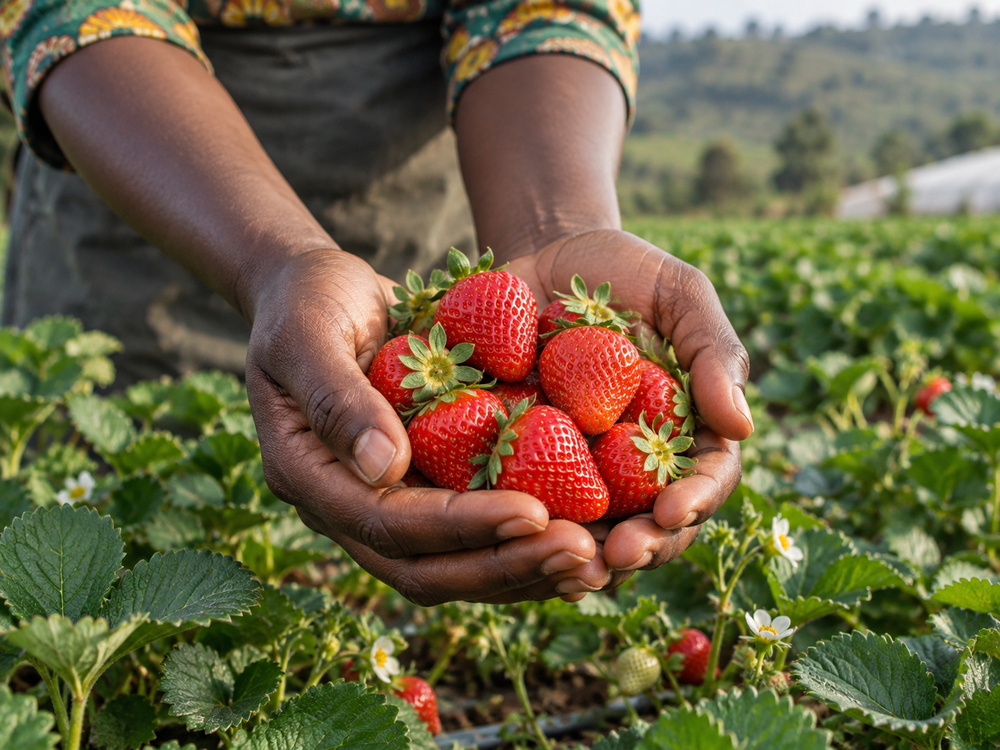

Avocados
Large-scale orchards supported by precision irrigation and fertigation.
Evergreen Holdings · Kigali, Rwanda
A connected, technology-driven platform producing high-quality food with disciplined operations and responsible resource stewardship.
Discover Evergreen ↗Welcome
Evergreen Holdings is building an integrated, technology-driven commercial agriculture platform in Rwanda through Agribloom Farms and Pure Harvest Farms.
Our focus reaches beyond crop production to the full agricultural system—water, energy, production and post-harvest infrastructure—enabling responsible farming from soil preparation through to market delivery.
Explore our companies
Connected by design
Each part of the platform strengthens the next. Efficient water systems support production, renewable energy builds resilience, healthy soils improve crops, and cold-chain infrastructure preserves quality beyond the farm gate.
How the system works ↗What we grow
04 / CROPS
Large-scale orchards supported by precision irrigation and fertigation.
Protected greenhouse production with controlled crop management.
Efficient field production supported by center-pivot irrigation.
Planned high-value production using substrate-based systems.
One connected system
Capture, storage, precision irrigation and fertigation.
Renewable systems that strengthen resilience.
Composting and circular nutrient systems.
Packhouse and cold-chain infrastructure.